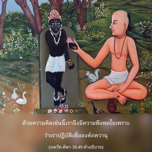
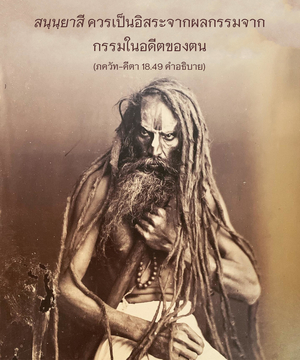

ผู้ที่ควบคุมตนเองได้ ไม่ยึดติด และไม่สนใจต่อความรื่นเริงทางวัตถุทั้งปวง จากการฝึกปฏิบัติการเสียสละเขาสามารถบรรลุถึงระดับสมบูรณ์สูงสุดแห่งความเป็นอิสระจากผลกรรม


การเสียสละที่แท้จริงหมายความว่า เราควรคิดอยู่เสมอว่าตนเองเป็นละอองอณูขององค์ภควานฺ ดังนั้นจึงคิดว่าไม่มีสิทธิ์จะรื่นเริงกับผลงานของตน เนื่องจากเป็นละอองอณูขององค์ภควานฺผลงานของเราต้องถวายให้พระองค์รื่นเริง นี่คือกฺฤษฺณจิตสำนึกที่แท้จริง บุคคลปฏิบัติในกฺฤษฺณจิตสำนึกเป็น สนฺนฺยาสี หรือผู้มีชีวิตสละโลกที่แท้จริง ด้วยความคิดเช่นนี้เราจึงมีความพึงพอใจเพราะว่าเราปฏิบัติเพื่อองค์ภควานฺโดยแท้จริง ดังนั้น จึงไม่ยึดติดกับสิ่งใดๆที่เป็นวัตถุ เราจะเคยชินกับการไม่หาความสุขกับสิ่งใดที่นอกเหนือจากความสุขทิพย์ซึ่งได้รับจากการรับใช้พระองค์ สนฺนฺยาสี ควรเป็นอิสระจากผลกรรมจากกรรมในอดีตของตน แต่บุคคลในกฺฤษฺณจิตสำนึกบรรลุถึงความสมบูรณ์โดยปริยาย โดยไม่ต้องอุปสมบทในระดับที่สมมติว่าเป็นชีวิตสละโลก ระดับจิตเช่นนี้ เรียกว่า โยคารูฒ หรือระดับสมบูรณ์แห่งโยคะ ดังที่ได้ยืนยันไว้ในบทที่สามว่า ยสฺ ตฺวฺ อาตฺม-รติรฺ เอว สฺยาตฺ เป็นผู้ที่มีความพึงพอใจในตนเอง และไม่มีความกลัวต่อผลกรรมใดๆ จากการกระทำของตนเอง